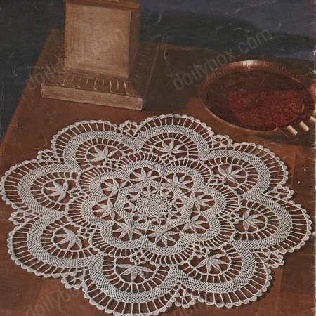

Cluny Centerpiece Doily Pattern
Due to its intricate and delicate nature, crocheting a Cluny doily requires patience, attention to detail, and some experience with more advanced crochet techniques. The result is a stunning and timeless piece of crochet art that can be used as a centerpiece on tables, as a decorative element on furniture, or as a thoughtful gift for special occasions.
MATERIALS:
DAISY Mercerized Crochet Cotton, Art. 65, Size 20: 2 skeins White;
or
Lily MERCROCHET Mercerized Crochet Cotton, Art. 161, Size 20: 3 balls White.
No. 12 Steel Crochet Hook.
SIZE - 17 inches.
Starting in center, ch 9, join with sl st to form ring.
1st Rnd: Ch 1, 16 sc in ring, join to 1st sc.
2nd Rnd: Ch 1, sc in same st, (ch 5, sc in next sc) 15 times, ch 2, join with dc in 1st sc.
3rd Rnd: (Ch 3, sc in next lp) repeated around, ending with ch 1, hdc in end hdc of last rnd.
4th Rnd: Repeat Rnd 3 but make 8 incs (to inc make ch 3, sc in same lp with last sc), (24 lps).
5th 6th and 7th Rnds: Repeat 3rd Rnd for 3 rnds.
8th and 9th Rnds: Repeat 3rd Rnd for 2 rnds but make ch-4 lps, ending with ch 2 and hdc.
10th Rnd: (Ch 4, sc in next lp) twice, * ch 11, sk 1 ch, sc in next 2 ch, on chain make 1 hdc, 4 dc, 1 hdc and 1 sl st; (ch 10, sk 1 ch, on bal. of chain make 2 sc, 1 hdc, 4 dc, 1 hdc and 1 sl st) twice; skip these 3 petals, sc around ch-1 stem, sc in same ch-4 lp on edge, (ch 4, sc in next lp) 3 times; repeat from * around; end with ch 4, join to hdc at end of last rnd, sl st to center of 1st ch-4 lp.
11th Rnd: Ch 6, sc in tip of next petal, * (ch 11, sc in next petal) twice, ch 1, tr in center ch-4 lp between petal-groups, ch 1, sc in next petal; repeat from * around; join with ch 1, sl st in 5th st of ch-6.
12th Rnd: Ch 1, sc in same st, (ch 3, sc in next sp, 5 ch-3 lps in same sp) ** twice, ch 3, sc in next tr; repeat from * around; end with ch 1, hdc in 1st sc (for final lp).
13th Rnd: * Sc in 1st ch-3 lp on next scallop, (ch 3, sc in next lp) repeated around to next angle; repeat from * around; end with ch 1, hdc in end lp (for final lp).
14th, 15th and 16th Rnds: Repeat 13th Rnd three times.
17th Rnd: ** Sc in next lp, (ch 3, sc in next lp) 4 times to center lp, ch 17, * sk 1 ch, sc in next 2 ch, hdc in next 2 ch, holding back the last lp of each st on hook make dc in next 2 ch, yo and draw thru all 3 lps on hook at same time (Cluster), tr in next 2 ch, (tr in next 2 ch) made into a Cluster, tr in next ch, (dc in next 2 ch) made into a Cluster, hdc in next ch, sl st in next ch, * (ch 16, repeat from * to *) 4 times; sk these 5 petals, sc around ch-1 stem, sc in same ch-3 lp on edge, (ch 3, sc in next lp) 4 times; repeat from ** around; sl st in 1st sc.
18th Rnd: Ch 8, sc in next petal, * (ch 12, sc in next petal) 4 times, ch 1, dtr between 2 center lps between petal-groups, ch 1, sc in next petal; repeat from * around; end with ch 1, join to 7th st of ch-8.
19th Rnd: Ch 1, sc in same st, (repeat Rnd 12 from * to ** 4 times, ch 3, sc in next dtr) repeated around; join to 1st sc.
20th Rnd: * Sc in next 2 lps, (ch 3, sc in next lp) repeated around to 2d lp from angle, sc in end lp, repeat from * around; join to 1st sc.
21st thru 25th Rnds: Repeat 13th Rnd from * to ** for 5 rnds, ending final rnd with a ch-3 lp and sc instead of ch-1 and hdc; join to 1st sc.
26th Rnd: Ch 3, * sk 1 lp, dc in next lp, ch 5, tr in next lp, ch 5, dtr in next lp, ch 5, tr tr in next lp, (ch 5, long tr in next lp) 7 times (to make a long tr, thread over 5 times and work off in twos as for tr tr); ch 5, tr tr in next lp, ch 5, dtr in next lp, ch 5, tr in next lp, ch 5, dc in next lp, dc in angle between next 2 lps; repeat from * around; join to 1st ch-3.
27th Rnd: 5 sc in next sp, in next 12 sps make a shell of 1 sc, 1 hdc, 3 dc, 1 hdc and 1 sc; ** 5 sc in end sp, 5 sc in 1st sp on next scallop, sc, hdc and 2 dc (a half-shell) in half of next sp, ch 5, turn, sl st in center dc of next shell, ch 1, turn, 5 sc on ch-5 bar, sl st in last dc on half-shell, complete shell with 1 dc, 1 hdc and 1 sc; a half-shell in next sp, ch 5, turn, (tr, ch 5, tr) in center sc on 5-sc bar, ch 5, sl st in center dc of next shell; ch 1, turn, a shell in 1st sp, a half-shell in next sp, ch 20, * sk 1 ch, sc in next 2 ch, hdc in next 2 ch, (dc in next 2 ch) made into a Cluster, dc in next ch, tr in next 2 ch, (tr in next 2 ch) made into a Cluster, tr in next 2 ch, dc in next ch, (dc in next 2 ch) made into a Cluster, hdc in next ch, sl st in next ch; ch 19 and repeat from * thru 5th petal, sk 5 petals, sc around ch-1 stem, sl st in last dc on half-shell, complete shell with dc, hdc and sc; shell in next sp, sl st in last dc on next half-shell, complete shell, shell in next sp, half-shell in next sp; ch 7, turn, sc in 1st petal, (ch 12, sc in next petal) 4 times, ch 7, sk 1 shell, sl st in next shell; ch 1, turn, 8 so in 1st sp, sc in next sc, (14 sc in next sp, sc in next sc) 4 times, 8 sc in next sp, sl st in last dc of half-shell, complete shell, a shell in next sp, half-shell in next sp; ch 6, turn, sk 3 sc on scallop, tr tr in next sc, (ch 6, sk 4 sc, tr tr in next sc) 7 times to center sc, eh 6, tr tr in same sc, (ch 6, sk 4 sc, tr tr in next sc) 7 times, ch 6, sk 1 shell, sl st in next shell; turn, sc in 1st sp, (ch 3, sc, twice in same sp, ch 3, sc in next sp) 16 times, ch 3, sc in same sp, ch 3, sl st in last dc of half-shell, complete shell, sc in long tr between sps, a shell in next 6 sps; repeat from ** around; to make 8th scallop, sl st to center of 1st shell and make ch-5 and 5 sc bar; sl st to center of next shell, make 3-shell bar with 5-petal group; sl st to center of next 2d shell and work ch-sps around and sc back; sl st to center of next 2d shell and work ch-sps and tr tr around, with ch-3 lps back; sl st to sc in long tr between scallops.
28 Rnd: Ch 4, * sc in next ch-3 lp, (ch 3, sc in next lp) repeated around to next angle, ch 1, dc in sc between shells, ch 1 and repeat from * around; join with ch 1, sl st in 3d st of ch-4.
29th and 30th Rnds: Repeat Rnd 13 from * to ** twice.
31st and 32nd Rnds: Repeat Rnd 20 twice.
33rd and 34th Rnds: Repeat Rnd 13 from * to ** twice, making final lp in Rnd 34 a ch-3 lp instead of ch-1 and hdc; sl st in 1st sc, sl st to 2d lp on next scallop.
35th Rnd: Ch 9, * sk 1 lp, dc in next lp, ch 6, sk 1 lp, tr in next lp, ch 6, sk 1 lp, dtr in next lp, ch 6, sk 1 lp, tr tr in next lp, ch 6, sk 1 lp, long tr in next lp, (ch 7, sk 1 lp, long tr in next lp) 8 times, ch 6, sk 1 lp, tr tr in next lp, ch 6, sk 1 lp, dtr in next lp, ch 6, sk 1 lp, tr in next lp, (ch 6, sk 1 lp, dc in next lp) twice, sk end lp, dc in 2d lp on next scallop, ch 6, repeat from * around; join to 3d st of 1st ch-9.
36th Rnd: 6 sc in next sp, a large shell of 1 sc, 1 hdc, 1 dc, 4 tr, 1 dc, 1 hdc and 1 sc in next 16 sps, * (6 sc in next sp) twice, a half-shell of 1 sc, 1 hdc, 1 dc and 2 tr in next sp; ch 5, turn, sl st in 1st shell; ch 1, turn, 5 sc in ch-5 bar, sl st in last tr on half-shell, complete shell with 2 tr, 1 dc, 1 hdc and 1 sc; a half-shell in next sp, ch 6, turn, (dtr, ch 6, dtr) in center sc on 5-sc bar, ch 6, sl st in next shell; ch 1, turn, a large shell in each sp, sl st in last tr on half-shell, complete shell with 2 tr, 1 dc, 1 hdc and 1 sc; a large shell in next 14 sps; repeat from * around; to connect 1st and last scallops, sl st to center of 1st shell and make ch-5 and 5-sc bar; sl st to center of next shell and make 3-shell connection Fasten off. Stretch and pin Centerpiece right-side-down in a true circle. Steam and press dry thru a cloth.
HOME